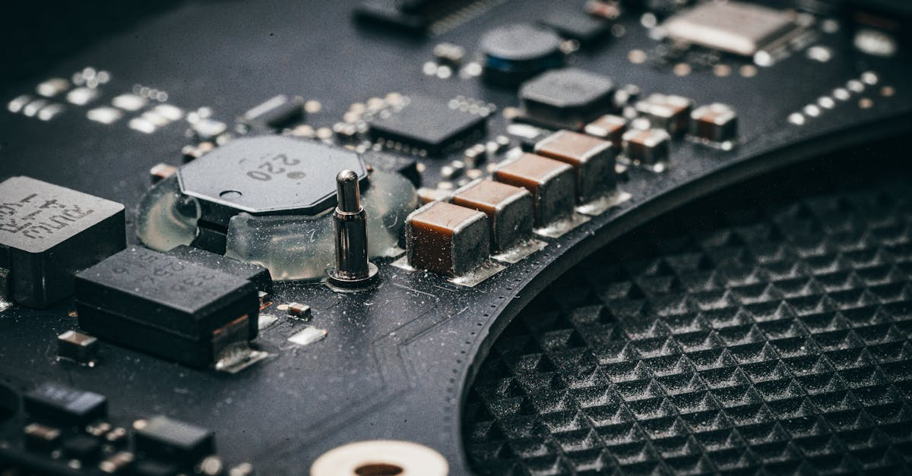

Le Dragon et le Tigre : Pourquoi Taiwan Est au Cœur de Tous les Dangers
Dans le grand échiquier mondial, certaines pièces, malgré leur taille modeste, détiennent une valeur stratégique inestimable. Taiwan en est l'exemple le plus frappant. Ce n'est pas seulement une île de 23 millions d'habitants au large des côtes chinoises, c'est un véritable nexus géopolitique et économique dont la stabilité est cruciale pour l'équilibre planétaire. Bloomberg Markets l'a d'ailleurs brillamment souligné en la désignant comme le « chokepoint géopolitique le plus périlleux du monde ». Pourquoi une telle désignation ? Parce que Taiwan est à la fois le cœur battant de l'innovation technologique mondiale et le point de friction le plus volatil entre les grandes puissances. Une situation explosive qui, si elle dégénérait, provoquerait des ondes de choc sismiques bien au-delà de la région, redessinant les cartes de l'économie globale et, inévitablement, celles des marchés financiers.
👉 À lire : Tensions USA-Iran : L'IA Face à l'Instabilité Géopolitique du Forex
Pour nous, acteurs du trading forex, cette réalité est loin d'être une simple spéculation académique. Elle représente un risque systémique majeur, capable de créer une volatilité sans précédent et de transformer radicalement la dynamique des paires de devises. Comment un trader, même le plus aguerri, peut-il anticiper les mouvements d'un marché sous l'emprise de tensions aussi profondes ? C'est une question cruciale qui nous pousse à regarder au-delà des graphiques techniques et à intégrer l'analyse géopolitique comme un pilier fondamental de notre stratégie. Car la moindre étincelle dans le détroit de Taiwan pourrait embraser les marchés, rendant les modèles traditionnels obsolètes et exigeant une réactivité et une capacité d'analyse que seuls les outils les plus avancés peuvent offrir. Comprendre la complexité de Taiwan, c'est donc se préparer aux défis de demain sur les marchés des devises.
👉 À lire : Iran: La crise diplomatique impacte le Forex

Les Puces qui Font Tourner le Monde : L'Arme Secrète de Taiwan
Si Taiwan est devenue un tel enjeu, c'est en grande partie grâce à une ressource invisible mais omniprésente : les semi-conducteurs. L'île est le siège de Taiwan Semiconductor Manufacturing Company (TSMC), un géant qui fabrique plus de 90% des puces électroniques les plus avancées au monde. Des smartphones que nous tenons dans nos mains aux centres de données qui alimentent l'intelligence artificielle, en passant par les systèmes de défense sophistiqués et les véhicules autonomes, presque tout dépend de ces minuscules merveilles d'ingénierie taïwanaises. Imaginez un instant le monde sans ces puces : l'économie mondiale s'arrêterait net, les chaînes d'approvisionnement s'effondreraient, et l'innovation technologique serait paralysée. C'est une dépendance quasi-totale, une fragilité structurelle que la pandémie de COVID-19 n'a fait que mettre en lumière avec la pénurie mondiale de composants.
Cette position dominante confère à Taiwan un levier économique et stratégique colossal, transformant une petite île en un protéger-à-tout-prix pour les grandes puissances occidentales. Les États-Unis, l'Europe et le Japon investissent des milliards pour tenter de reproduire cette capacité de production sur leur sol, mais les délais sont longs et les défis techniques immenses. En attendant, la sécurité économique mondiale repose sur la stabilité du détroit de Taiwan. « La dépendance mondiale envers les puces taïwanaises est une épée de Damoclès pour la stabilité économique », affirmait récemment le Dr. Élodie Martel, spécialiste des chaînes d'approvisionnement mondiales.
« Tout incident majeur dans le détroit ne serait pas seulement un choc localisé, mais un tremblement de terre économique d'une magnitude sans précédent, affectant chaque secteur, de l'automobile à la défense. »Cette réalité rend la situation d'autant plus tendue et les enjeux pour les marchés financiers, y compris le forex, d'autant plus vertigineux.
Le Détroit de Taiwan : Une Poudrière Géopolitique à l'Échelle Planétaire
Au-delà des puces, la géographie même de Taiwan la place au centre d'une intrigue géopolitique complexe, héritage de la guerre civile chinoise. Pékin considère l'île comme une province renégate, destinée à être réunifiée avec le continent, par la force si nécessaire. Cette revendication est une ligne rouge pour le Parti communiste chinois. De l'autre côté, Taiwan, avec son gouvernement démocratiquement élu, se considère comme une entité souveraine, bénéficiant du soutien, plus ou moins explicite, des États-Unis. La politique américaine d'« ambiguïté stratégique » maintient un équilibre délicat, promettant de défendre Taiwan sans s'engager formellement, une position qui irrite Pékin et inquiète Taipei.
Le détroit de Taiwan est ainsi devenu un théâtre de tensions permanentes : manœuvres militaires chinoises à grande échelle, traversées de navires de guerre américains, survols d'avions de combat. Chaque incident, chaque déclaration, est analysé à la loupe, car le moindre faux pas pourrait dégénérer en conflit ouvert. Les conséquences d'une telle confrontation seraient cataclysmiques, non seulement en termes de vies humaines, mais aussi pour la stabilité régionale et mondiale. « Le détroit de Taiwan n'est pas seulement un corridor maritime ; c'est le point de bascule entre l'ordre international actuel et une ère d'incertitude profonde », expliquait un rapport du Centre d'Études Stratégiques et Internationales. Les nations riveraines, comme le Japon, la Corée du Sud et les Philippines, seraient directement impactées, leurs économies et leurs alliances stratégiques remises en question. Pour les marchés financiers, cette incertitude est un poison lent, mais potentiellement mortel, capable de déclencher des mouvements de capitaux massifs et des chocs de confiance généralisés.
L'Effet Domino : Quand une Crise à Taiwan Ébranle l'Économie Mondiale
Une crise majeure autour de Taiwan ne serait pas un simple incident régional ; ce serait un cataclysme économique mondial. Le scénario le plus redouté, une invasion ou un blocus, entraînerait l'effondrement immédiat de l'approvisionnement en semi-conducteurs. Les usines automobiles s'arrêteraient, les chaînes de production d'électronique seraient à l'arrêt, et même les infrastructures critiques dépendraient de puces qui ne seraient plus disponibles. L'inflation, déjà un défi mondial, exploserait à des niveaux inédits, tandis que la croissance économique plongerait dans une récession profonde et prolongée. Les experts prévoient des pertes de PIB mondial se chiffrant en milliers de milliards de dollars, bien au-delà de ce que la pandémie ou la crise financière de 2008 ont pu provoquer. Un tel choc serait sans précédent dans l'histoire économique moderne.
Les répercussions s'étendraient bien au-delà des puces. Les voies maritimes vitales du détroit de Taiwan seraient perturbées, impactant le commerce mondial et faisant grimper les coûts de fret. Les marchés de l'énergie seraient également touchés, avec des prix du pétrole et du gaz s'envolant face à l'incertitude. Les investissements étrangers en Chine et dans toute l'Asie seraient remis en question, déclenchant une fuite des capitaux et une déstabilisation financière généralisée. « Nous parlons d'un scénario de 'cyber-apocalypse' pour l'économie mondiale », a récemment commenté un analyste de Goldman Sachs, soulignant l'interconnexion critique de l'écosystème technologique. Les pays seraient contraints de revoir leurs alliances, leurs politiques commerciales et leurs stratégies de défense, dans un monde post-Taiwan radicalement transformé. Pour les traders, cela signifie des marchés où les corrélations habituelles volent en éclats, où les actifs refuges traditionnels peuvent vaciller, et où la capacité à réagir instantanément devient une question de survie financière.
Marchés des Devises : Naviguer la Tempête Taïwanaise avec Précision
La menace que représente Taiwan est particulièrement palpable sur le marché des devises. Le forex est par nature un reflet des dynamiques économiques et géopolitiques mondiales. Une escalade des tensions dans le détroit provoquerait une volatilité extrême et des mouvements de devises imprévisibles. Le dollar américain (USD), souvent considéré comme une valeur refuge en période de crise, pourrait initialement se renforcer, mais une crise prolongée pourrait aussi éroder la confiance dans l'économie mondiale, y compris celle des États-Unis. Le yuan chinois (CNY) serait sous une pression immense, avec des risques de dévaluation massive en cas de conflit ou de sanctions internationales. Le yen japonais (JPY), autre valeur refuge traditionnelle, pourrait connaître des fluctuations erratiques, tiraillé entre son statut de havre et sa proximité géographique avec la zone de conflit.
De même, les devises des pays fortement dépendants du commerce asiatique et des chaînes d'approvisionnement en semi-conducteurs, comme le won coréen (KRW) ou le dollar australien (AUD), seraient durement touchées. Les investisseurs chercheraient à se défaire des actifs risqués, entraînant des ventes massives et des spreads élargis. « Dans un tel environnement, les schémas historiques de trading deviennent caducs », observe M. Antoine Lefèvre, stratège en devises chez EuroCapital.
« La psychologie de marché serait dominée par la peur et l'incertitude, rendant les analyses techniques classiques insuffisantes et les décisions humaines sujettes à l'émotion. »Face à cette complexité et à la rapidité des événements potentiels, les traders humains se retrouveraient rapidement dépassés. La capacité à traiter une quantité colossale d'informations en temps réel, à identifier des corrélations émergentes et à exécuter des ordres sans délai devient non seulement un avantage, mais une nécessité absolue pour naviguer ces eaux tumultueuses.

L'Intelligence Artificielle : Le Bouclier Contre l'Incertitude Géopolitique
Alors que le monde se prépare à une ère de volatilité accrue, la question se pose : comment les traders peuvent-ils non seulement survivre, mais prospérer face à des chocs géopolitiques d'une telle ampleur ? La réponse réside de plus en plus dans l'intelligence artificielle. Un agent IA de trading forex est conçu pour opérer au-delà des limites humaines. Il ne dort jamais, ne ressent pas la peur, et ne succombe pas à la panique. Ces systèmes peuvent scanner des milliers de sources d'information en temps réel – dépêches d'agences de presse, discours politiques, données satellitaires, et même analyses de sentiments sur les réseaux sociaux – pour détecter les signaux faibles et les changements de dynamique avant qu'ils ne deviennent des tendances de marché majeures.
Imaginez un agent IA capable d'analyser l'impact potentiel d'une déclaration diplomatique sur le JPY/USD, ou de réagir à une manœuvre militaire dans le détroit en ajustant instantanément un portefeuille. Ces systèmes sont capables d'exécuter des trades à des vitesses fulgurantes, bien au-delà de la capacité humaine, et de gérer le risque avec une précision chirurgicale, en diversifiant les positions ou en activant des ordres stop-loss stratégiques. Ils peuvent identifier des corrélations complexes entre les événements géopolitiques et les mouvements de devises, souvent invisibles à l'œil humain, et adapter leurs stratégies en fonction de ces nouvelles informations. En somme, dans un monde où Taiwan représente un risque de « cygne noir » permanent, un agent IA qui trade le forex pour vous 24h/24 devient un allié indispensable. Il offre non seulement la réactivité et la capacité d'analyse nécessaires pour naviguer ces eaux dangereuses, mais aussi la sérénité de savoir que votre stratégie est gérée par une technologie de pointe, optimisée pour la performance et la résilience, même face aux plus grandes incertitudes géopolitiques. C'est l'avenir du trading, un avenir où l'IA transforme le risque en opportunité.
Conclusion : Préparer l'Avenir, l'IA comme Alliée Incontournable
La situation autour de Taiwan est un rappel brutal de l'interconnexion de notre monde et de la fragilité de la stabilité globale. Ce « chokepoint géopolitique » n'est pas seulement une menace pour la paix, mais une source d'incertitude économique et financière majeure qui exige une nouvelle approche de l'investissement et du trading. Les marchés des devises, par leur nature même, seront en première ligne si la situation dégénère, offrant à la fois des risques colossaux et, pour ceux qui sont préparés, des opportunités uniques.
Dans ce contexte de volatilité croissante et de complexité sans précédent, l'approche traditionnelle du trading atteint ses limites. L'émotion humaine, la lenteur d'analyse et la capacité limitée à traiter des volumes massifs de données deviennent des handicaps. C'est là que l'intelligence artificielle entre en jeu, non pas comme un simple outil, mais comme un partenaire stratégique indispensable. Les agents IA offrent la réactivité, la capacité d'analyse et la résilience nécessaires pour naviguer les tempêtes géopolitiques. Ils transforment l'incertitude en données exploitables, permettant des décisions éclairées et des exécutions précises, 24 heures sur 24. L'avenir du trading, surtout dans un monde où des points chauds comme Taiwan peuvent éclater à tout moment, sera indéniablement façonné par l'adoption de ces technologies avancées. Pour rester compétitif et protéger ses investissements, comprendre et intégrer l'IA dans sa stratégie de trading n'est plus une option, c'est une nécessité impérative.